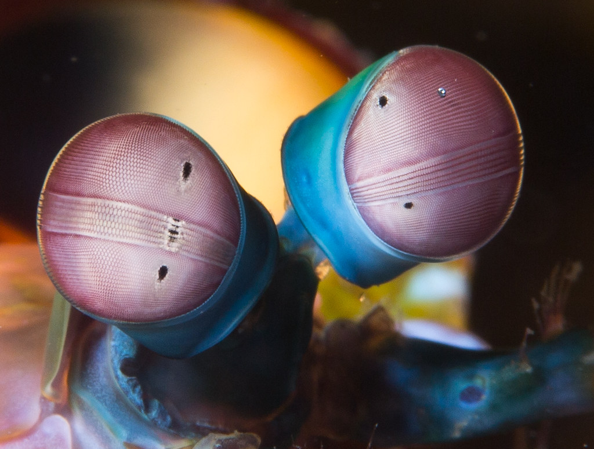

A percepção das cores
O Odontodactylus scyllarus possui um olho composto, feito de milhares de pequenas unidades, cada uma detectando a luz de forma independente. Aqueles na faixa intermediária - a faixa central que você pode ver na foto - são especiais. São eles que deixam o animal ver as cores.
A maioria das pessoas tem três tipos de células de detecção de luz, ou fotorreceptores, que são sensíveis à luz vermelha, verde e azul. Mas o camarão-louva-a-deus-palhaço tem de 12 a 16 fotorreceptores diferentes em sua banda média. Presume-se que elas devem perceber uma ampla gama de cores - uma “bomba termonuclear de luz e beleza”, como disse o The Oatmeal site. Mas no ano passado, Hanna Thoen, da University of Queensland, descobriu que eles são muito piores em discriminar cores do que a maioria dos outros animais! Eles parecem usar seus mais de uma dúzia de receptores para reconhecer cores de uma forma única que é muito diferente de outros animais, mas estranhamente semelhante a alguns satélites.
Thoen se concentrou nos receptores que detectam cores do vermelho ao violeta - o mesmo arco-íris que podemos ver. Mas esses animais ultraviolentos também podem ver ultravioleta (UV). Há, por exemplo, outras espécies de stomatopodas que possuem seis fotorreceptores dedicados a essa parte do espectro, cada um sintonizado em um comprimento de onda diferente. Esse é o sistema de detecção de UV mais complexo encontrado na natureza.